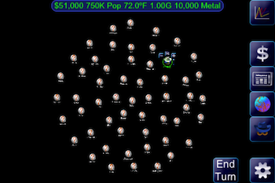
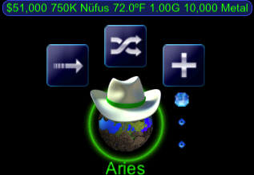
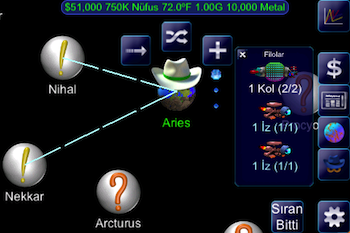
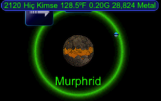
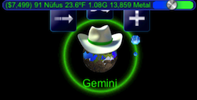
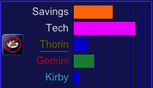
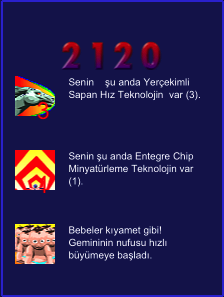

Spaceward Ho! oyununda amaç galaksiyi fethetmektir.

Yeni bir oyuna başlarken, oyunun öntanımlı değerlerini değiştirmeden, sadece Start (başla) düğmesine basmanızı tavsiyse ederiz. Öntanımlar yeni oyunu gelişip inkişaf eden bir sistem ile başlatır. Sonradan, sen galaksinin biçimini, büyüklüğünü, ve hatta kaç tane hasım ile yarışacğını ayarlayabilirsin.

Beyaz şapkalar senin kolonize ettiğin gezegenleri gösterir. Çevresinde dolaşan gemiler olan bir gezeğen varsa, mavi noktalar gemileri göserir. Bir gezeğeni seçmek istiyorsan, üstünü tıkla.

Başlangıçta, mükemmel ve nüfüsu çok olan bir tek gezeğen seçebilirsin. Tam şimdi, kendine yıldızlar arası bir gemi üretebilme durumuna geldin. Başlangıçta gezeğenin izci (gözcü) ve koloni gemileri olabilir, ama sen gezeğeni çift tıklarsan daha çok gemiler üretebilirsin.

Galakside inçelenmemiş pek çok gezeğenler var.

Yıldiz sistemleri keşfetmek için, gözcü gemilerini gezeğenlere gönder. İncelemek istediğin bir gezeğene gözcü gemi göndermek için, geminin adını sürükle. Gemi göndermek istemiyorsan, ev gezeğenine geri sürükle.

Gemi göndermeyi bitirdiğin zaman, Sıram Geçti düğmesini tıkla. Bu, sıranda istediğin her şeyi yaptın demektir.

Yerleşim için, beazı yıldız sistemleri diğerlerinden daha uygun olabilir. Gezeğenin yer çekimi 1.00G ye ne kadar yakın olursa, o kadar iyidir. Eğer sıcaklık 73F den çok farklı ise, üzülme -- istediğin zaman "terraform", yani en uygun sıcaklık ortamını yaratabilirsin. Her gezeğendeki metal miktarı farklıdır. Yeni gemiler yapmak için metal kullanılır. Senin ev gezeğenine benzer bir gezeğen bulduğun zaman, Koloni Gemileri üretip o gezeğeni kolonize edersin.

Öyle bi gezeğene vardığın zaman, sıcaklığını düzeltir, ve tüm metal miktarını çıkarırsın, ve sonra orayı daha ileri keşifler ve koloniler yapmak için üs olarak kullanırsın. Gezeğenin sol tarafındaki sürgüyü, sicaklığı düzeltmek için yukarı doğru, metal çıkarmak için de aşağı doğru kaydır. Seçim yapmaya gerek kalmayınca sürgü kaybolur. Birkaç yüzyıl geçtikten sonra, yeni gezeğenin müfusu o kadar artar ki, gezeğen tıpkı senin ev gezeğenin gibi önemli miktarda kazanç getirmeye başlar.

Ne kadar metal ve paran olduğunu, ve ne kadar tasarruf yaptığını, bilgi cetvelinin sol üst tarafında görebilirsin.

Galaksi imparatorluğunu genişletmek için, gezeğenden gezegene geçersin. Eninde sonunda karşına hasımlar çıkar -- aynı galaksiyi fethetmek isteyen kötü kişiler.

Keşif ve kolonileştirmeden başka, kendini daha azgın yabancı ırklara karşı savunmak zorundasın. Bunu yapabilmek için, kolonilerinde savunucu uydular üretirsin. İstediğin bir kolonide gemi ve uydu yapmak için, koloniyi çift tıkla. Bu, gemi yapma diyaloğunu gösterir. Gemi için silah, zırh, ve başka teknolojileri istersen sen kendin ayarlarsın, veya bir düğme ile maksimum teknolojiyi seçersin.


Kendini savunmak için, istersen savaş gemilerinde oluşan filolar üretip, yabancılar gelmeden onlara hücum edebilirsin--yani bildiğimiz " hücüm en iyi savunmadır" stratejisi. Savaşcılarını gönderdikten sonra, muharebenin sonuçlarını izleyebilirsin.

Eğer savaştan hoslanmıyorsan, yabancılarin bazıları ile anlaşıp, düşman yerine müttefikler edinirsin. Fakat unutma, bazıları müttefik olmak istemez.

Gezeğenlerin sıcaklık düzenlemesi ve maden işletmelerinden başka, birde teknolojik araştırmalar için para harcayacaksın. Üreteceğin ilk gemiler, başkayıldızlara uçabilir, ancak onlar büyük, kaba, yavaş, ve zayıftır. Araştrma için para harcarsan, gemilerinin teknoloji seviyesi gelişir. Şühesiz, savaşta üstün gemiler eski teknoloji gemileri yokeder. Teknoloji için ne kadar para harcayacağını ayarlamak için, harcanmış olanı tıkla ve kaydır.

Harcayacağın paran 100% , ve harcadığın miktarını para şeritleri gösterir. Menzil (Range), gemilerinin daha uzak gezeğenlere gidebilmeni ayarlar. Hız, daha hızlı gitmelerini sağlar, ve böylece gemilerinin muharebede en önce ateş etmesini sağlar. Mini (minyatürleşme), daha az metal ile daha küçük gemiler üretebilmeni sağlar fakat daha çok para ister. Radical(Kökten), ile alışılmıştan farklı seviyelerde, tamamen rasgele teknoloji kullanabilmeni sağlar.
Ayrıca, kolonileştirdiğin gezeğenlerin tümünü görebilirsin. Birini tıklayınca onun galaksideki yerini görürsün. Tabii, planet için ne kadar para harcayacğını ayarlayabilisin. Veya, teknolojiye harcadığını ve tasarrufa koyduğun miktarları da.

Bazan, geriye gidip de geçmişte neler olduğunu görmek isteyebilirsin; History (Tarih) şeridini tıklamak yeter. Nesnelerin listesine bakıp, görmek istediğin birini tıklaman yeter.

Tüm düşman kolonilerini mahvettiğin zaman, oyunu kazanmış oluyorsun. İstersen oynamaya devam edebilirsin ama, kötülerin hepsi öldüğü için, hiç bir karşı direniş olmaz.

Bu bilgiler Spaceward Ho! oynamak için bir giriştir. Daha geniş bilgiler için sitesini ziyaret edin.